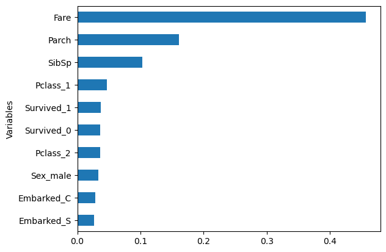
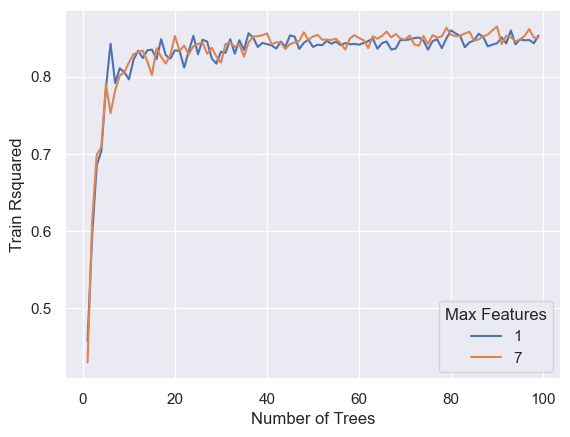
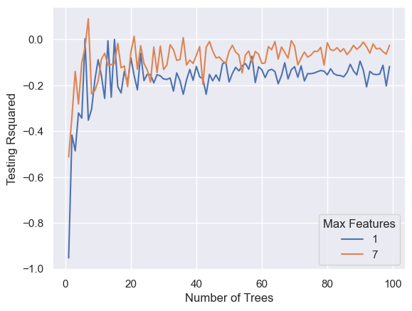

import pandas as pd
import numpy as np
import warnings
warnings.filterwarnings('ignore')
np.random.seed(12356)
df = pd.read_csv('titanic.csv')
df = df.dropna()Random Forest - Regression
1. Predicting Age
1.1 Import the data
1.2 Assign input and output variabble
# Assign input variables
X = df.loc[:,['Pclass','Sex','Fare','Embarked','SibSp','Parch','Survived']]
# Assign target variable
y = df['Age']1.3 Handle some missing and fix variables types
# Impute the Embarked variable
X["Embarked"] = X["Embarked"].fillna("S")
# Change Pclass to categorical variable
X['Pclass'] = X['Pclass'].astype(object)
X['Survived'] = X['Survived'].astype(object)1.4 Encode categorical variable
X = pd.get_dummies(X)1.5 Split the data
from sklearn.model_selection import train_test_split
x_train,x_test,y_train,y_test=train_test_split(X,y,test_size=0.3)1.6 Set up and Train Gradient Boosting
from sklearn.ensemble import RandomForestRegressor
r1 = RandomForestRegressor(n_estimators=100, max_features=3)
r1.fit(x_train, y_train)
# Rsquared
from sklearn.metrics import r2_score
print('Rsquared on Testing: ', r2_score(y_test, r1.predict(x_test)))Rsquared on Testing: -0.10467825143722398Variable Importance
import warnings
warnings.filterwarnings('ignore')
sorted_idx = (-r1.feature_importances_).argsort()
feature_importance = pd.DataFrame({'Variables':x_train.columns[sorted_idx], 'Importance':r1.feature_importances_[sorted_idx]})
df = feature_importance[:10]
df.sort_values('Importance',inplace=True)
df.plot(kind='barh',y='Importance',x='Variables', legend=False)<Axes: ylabel='Variables'>
n1 = 1
n2 = 100
l1 = 1
l2 = 7
ac = pd.DataFrame([], columns=list(['Number of Trees','Max Features','Train Rsquared']))
for rs in range(n1, n2):
for lr in [l1, l2]:
boost = RandomForestRegressor(n_estimators=rs, max_features=lr)
boost.fit(x_train,y_train)
ac = pd.concat([ac, pd.DataFrame([[rs, lr, boost.score(x_train, y_train)]],
columns=list(['Number of Trees','Max Features','Train Rsquared']))],
ignore_index=True)
import seaborn as sns; sns.set()
import matplotlib.pyplot as plt
ax = sns.lineplot(x="Number of Trees", y="Train Rsquared", hue =ac['Max Features'].astype('category'),data=ac)
n1 = 1
n2 = 100
l1 = 1
l2 = 7
ac = pd.DataFrame([], columns=list(['Number of Trees','Max Features','Testing Rsquared']))
for rs in range(n1, n2):
for lr in [l1, l2]:
boost = RandomForestRegressor(n_estimators=rs, max_features=lr)
boost.fit(x_train,y_train)
ac = pd.concat([ac, pd.DataFrame([[rs, lr, boost.score(x_test, y_test)]],
columns=list(['Number of Trees','Max Features','Testing Rsquared']))],
ignore_index=True)
import seaborn as sns; sns.set()
import matplotlib.pyplot as plt
ax = sns.lineplot(x="Number of Trees", y="Testing Rsquared", hue =ac['Max Features'].astype('category'),data=ac)
2. Practice
Predicting NBA Salary. Download the data at: https://bryantstats.github.io/math460/python/nba_salary.csv
Import the data and drop all the missing values
Set the input (X) and output (y) (Use
df.columnsto see all the columns to easier copy/paste). Split the data into 60% training and 40% testing (No need to do 1.3 and 1.4 as all variables are numeric and have correct types)Train a random forest of 200 trees and consider only 2 variables at each split for the trees. What is testing Rsquared of the model?
What is the most important variable according to the model?
Find a random forest that have a higher testing Rsquared than the first forest.